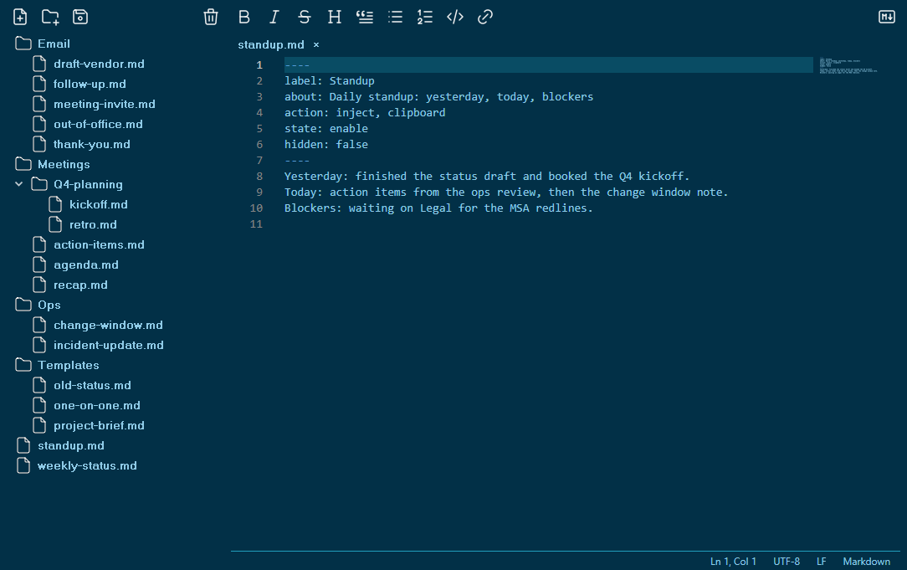

snipperting
Save text snippets on Windows and fire them from the system tray. Copy to the clipboard, or inject at the caret.

- Markdown files in a folder you choose (default
~/.snipperting) - Folders become menu categories
- Native tray menu, preferences, and help. Monaco edits snippets inside a native window